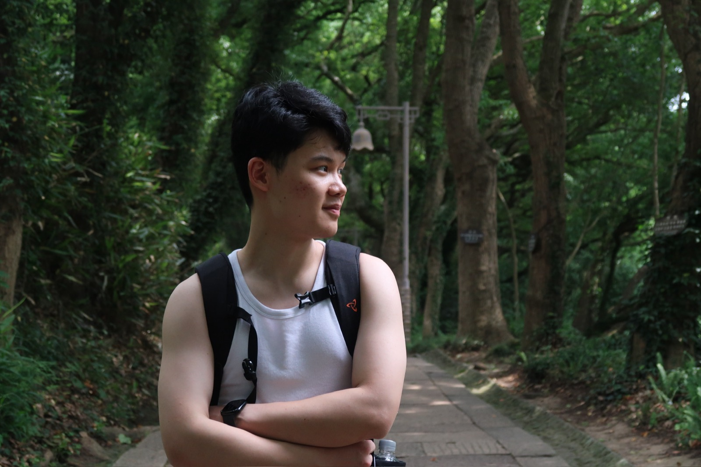

Yimiao Yu
I'm a data science master's student studying the science of deep learning.
NYU Center for Data Science · New York
Open to collaborations & internships
About
Biography
I'm working on the science of deep learning. My current focus is memorization: deep networks can fit entirely random labels, yet that process is not a dead end. It transfers, accelerates later learning, and has structure worth mapping.
Before New York, I studied data science in Zhoushan, an island city in China — B.S. at Zhejiang Ocean University, 2025.
Interests
- Science of deep learning
- Memorization & transfer
Education
- 2025 — 2027 M.S. Data Science NYU Center for Data Science — New York
- — 2025 B.S. Data Science Zhejiang Ocean University — Zhoushan